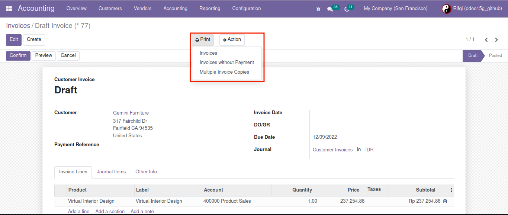
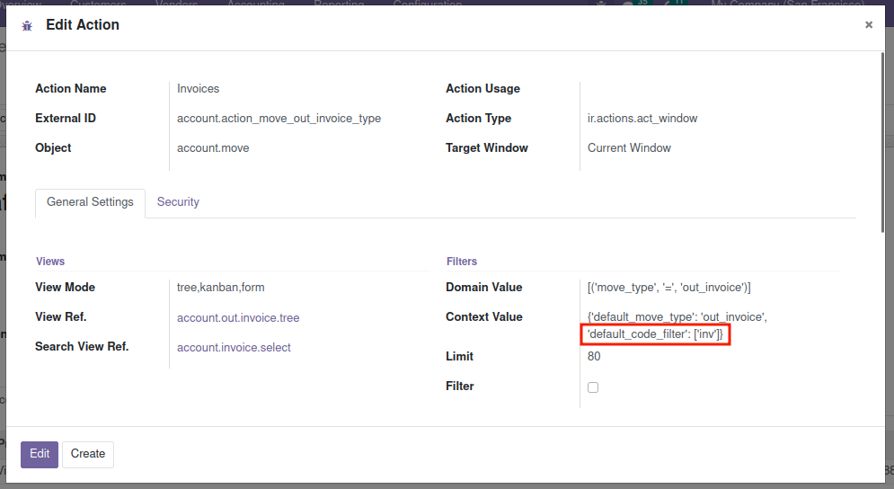
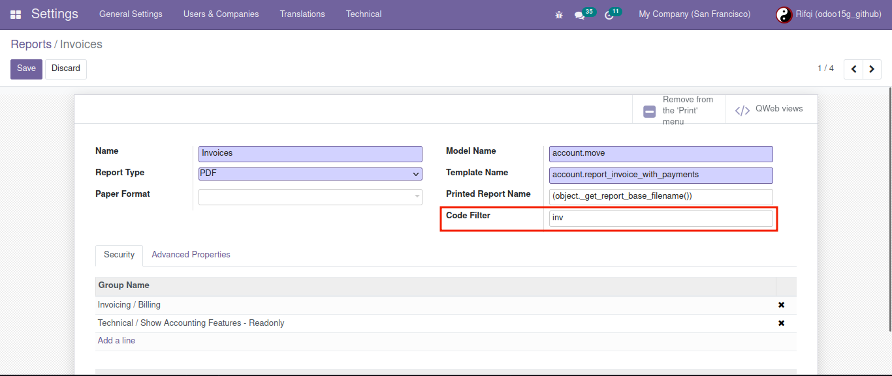
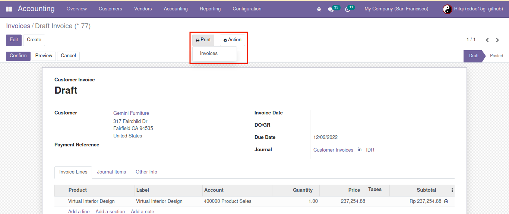
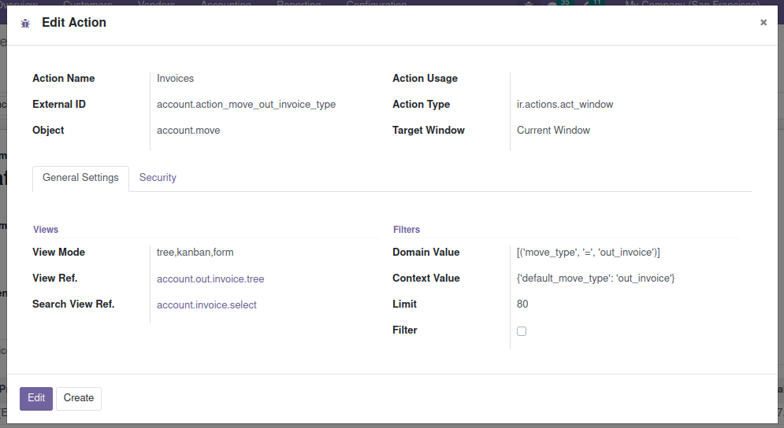
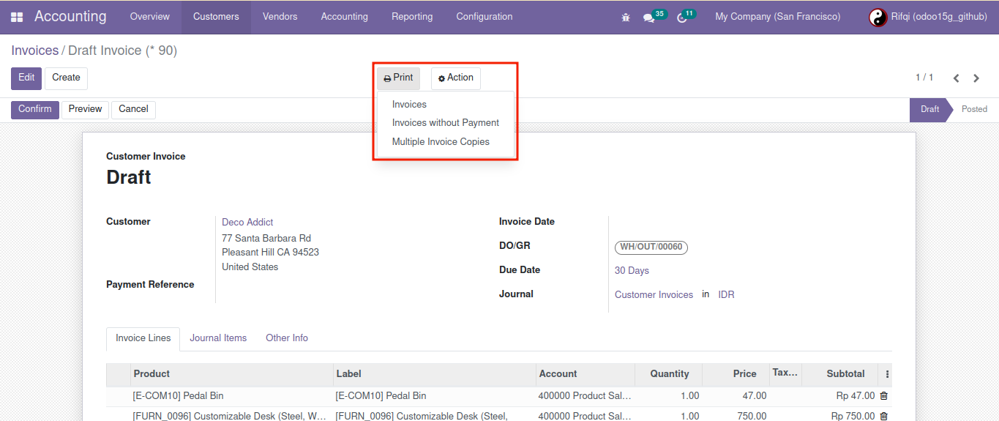

Filter printout actions for visible and invisible
Display printout actions before filtering.
Add default_filter_code in context with the value of an array. The default_filter_code value is adjusted to the filter code contained in the action report.
Set a unique code in the report to be filtered.
Display printout actions after filtering.
Remove context default_filter_code in context.
Then the view will be default.
